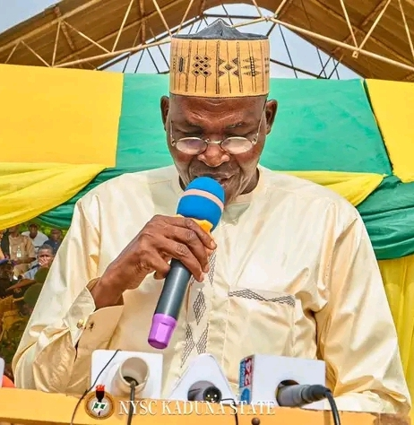
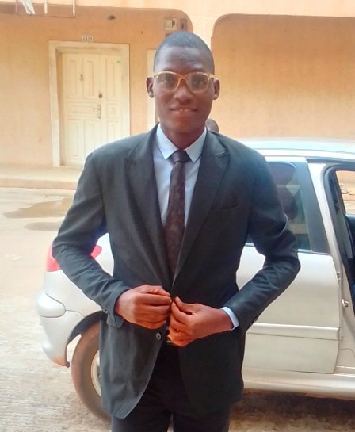

Brig Gen YD Ahmed was born in Kagarko, Kaduna State. He attended the
Ahmadu Bello University Zaria, where he obtained a Bachelor of Arts
Degree in Education (History). Driven by his insatiable thirst for
knowledge, he went on to bag Degrees of Master of Education (Educational
Psychology) and Master of Arts in Peace and Strategic Studies. His
military career began with his commissioning into the Nigerian Army
Education Corps as a Lieutenant on 5th July 1997. In line with the
Nigerian Armed Forces tradition of promoting professionalism through
training and retraining of officers, he has attended several courses.

Mr. MH Taura
The NYSC Kaduna State Coordinator, Mr. Mahmud Hassan Taura, in his
introductory address, encouraged the Corps members to actively
participate in all camp activities. He added that the Orientation Course
will give them the opportunity to interact with individuals from diverse
socio-cultural backgrounds thereby, promote national unity and
integration.

Mr Patrick
A consultant and professional web developer at Zeteo Citadel Consult in
Collaboration with University of Ibadan Consultancy Service Unit. Having
gotten his disciplinary qualification in Computer Science from the
prestigious Ekiti State University.